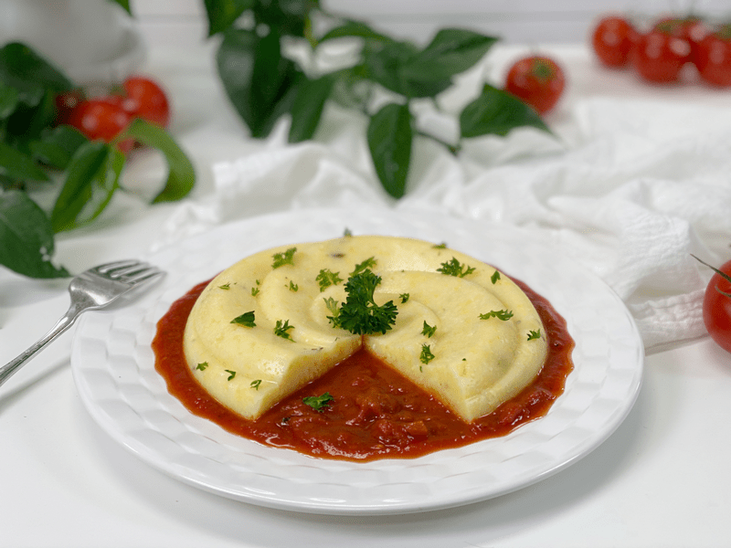
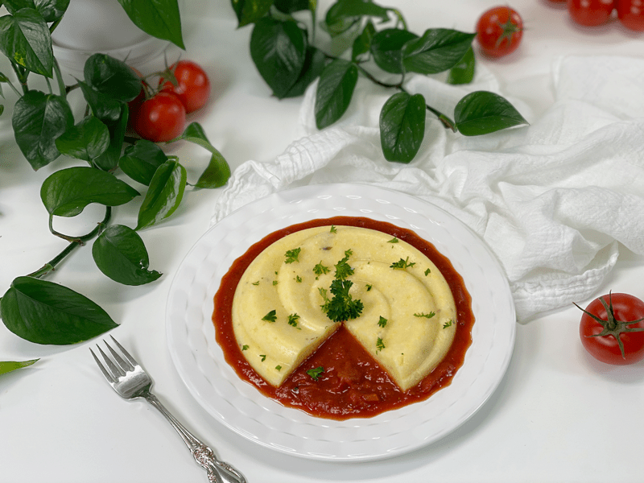
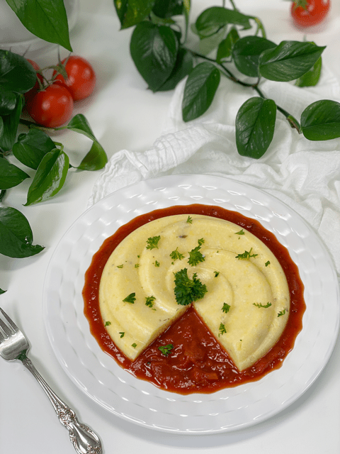
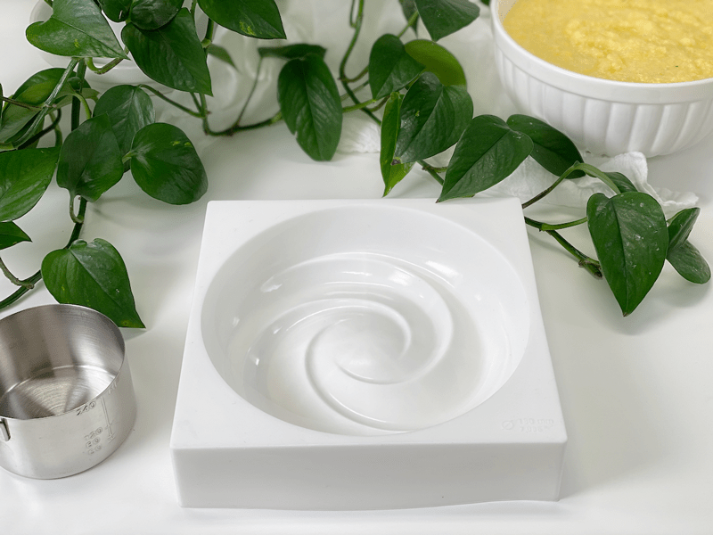
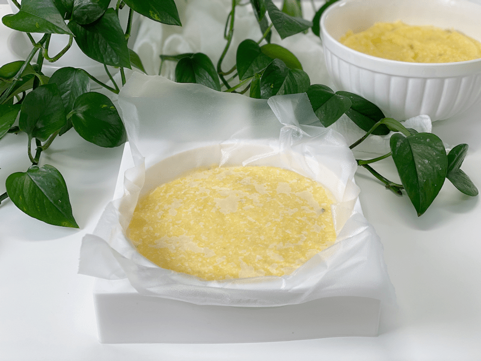
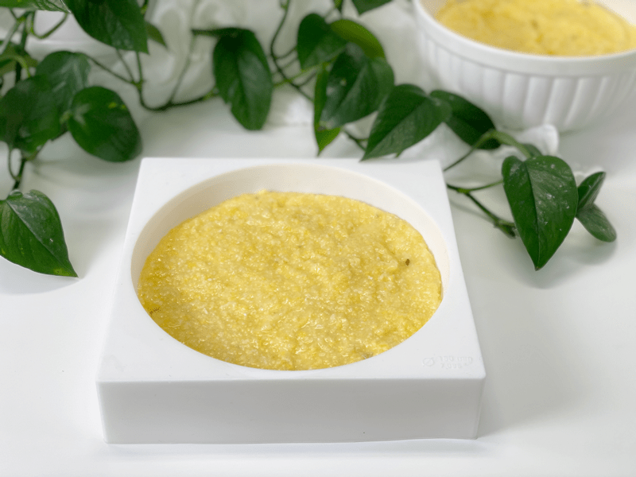
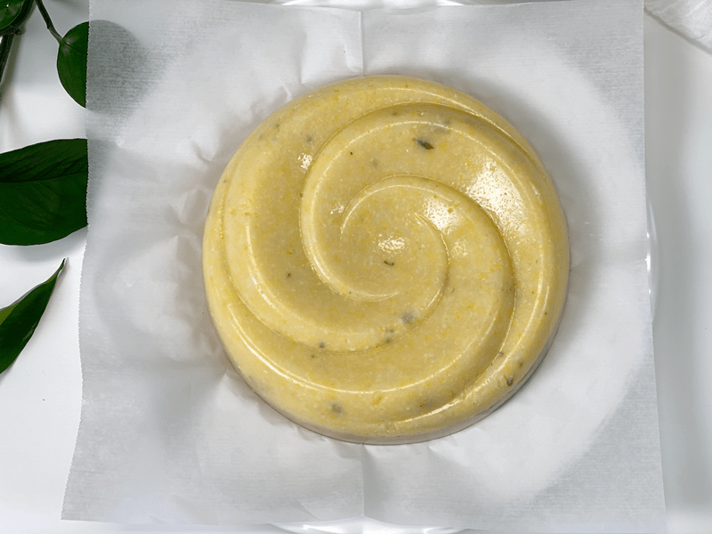

Polenta and Marinara Sauce | Oil-Free | Pantry Cooking
With the continuation of “Shelter in Home,” Bob and I are enjoying a much simpler diet these days, and I have to say that I am loving the challenge. First and foremost, I strive to create a nutritious, delicious plate of food that shocks the palate with bold flavor. But I can’t deny the fact that regardless of how simple the ingredients may be…I just have to make it look beautiful.

Today, was no exception. Simple grits turned into an art sculpture, served with a stunning red sauce. Not only does the color stand out in contrast between the two, so do the flavors. Polenta (Italian cornmeal) is very mild in flavor, so I decided to pair it with the bright acidic flavor of a well-seasoned tomato sauce.
I have also been focusing on batch cooking, building up a surplus of shelf-stable foods (pantry, fridge, freezer). Since fresh foods are more difficult to run out and get, I am using a lot of them in soups and sauces so I can better extend their life, drawing upon them when our fresh produce dips below comfort. I don’t know how long this pandemic will last, but I am going to make the best of the situation.
Polenta is a pantry staple ingredient that I have been using when batch cooking. I use my Instant Pot, making up 4 cups of cooked porridge. From there, I divide up the porridge to use in different ways throughout the week. I portion out a few bowls to eat for breakfast or lunch (it’s great sweet or savory), then I make either baked fries or croutons from it.
This time around I decided to pour some of the porridge into a silicone mold that I had tucked away with my baking supplies. I knew that when chilled it would firm up, so I thought it would fun to see how it would hold a shape using a baking mold. It didn’t disappoint! So, if you feel inspired, look around in your kitchen and see what neat shape you can create. You don’t need to line or grease the mold; just make sure that it doesn’t have a lip that turns inward, for the sake of popping it out. You can also skip the molding technique and enjoy it right away, creamy and warm. While it’s still nice and hot, place a scoop into a bowl, adding your tomato sauce of choice to it.

As far as the tomato sauce goes…you can make your own, or you can try my raw marinara sauce or use a good quality store-bought one…whatever fits into your lifestyle at the moment. It would also taste amazing with Almond Parmesan or Brazil Nut Cheese Crumble sprinkled on top.
Make Every Bite Count
- Cook the polenta with kombu seaweed (you can read more about that in the cooking techniques listed below).
- ALWAYS use organic NON-GMO polenta.
- Make your sauce from scratch to better control the ingredients, freshness, and flavor.
- Regardless of the situation, plate your food beautifully to show gratitude and love for yourself or those sitting at the table with you.
I hope you enjoy this simple recipe. Please comment below and have a blessed day, amie sue

Ingredients
Preparation
- Please read through the post where I go more in-depth on how I put this dish together.
- Make a batch of Italian Corn Porridge. Here is a link to make it either on the (stove top) or in an (Instant Pot).
Molding the Porridge
- Using a mold for the polenta is purely up to you. It’s just another way to add beauty to your life.
- No need to grease or line the mold that you are using. The polenta will pop right out. Just make sure that the mold you are using doesn’t have a lip that turns inward, which would make it harder to remove.
- Press a piece of plastic wrap on top of the porridge to block any exposure to air, which will prevent a skin from forming on top.
- Set the molded porridge in the fridge overnight to firm up, or serve right away in a looser form.
- Remove the molded polenta from the fridge and serve with marinara sauce. It can be enjoyed cold or warmed.
- Or you can skip the whole fancy molding bit and serve it right away. Place a scoop of porridge alongside a scoop of marinara sauce.
- Store leftovers in the fridge for up to 5 days.
-

-
Feel free to use any mold you may have on hand.
-

-
Be sure to cover the porridge by pressing plastic wrap on top.
-

-
Once firm, remove the plastic wrap so you can flip it over onto a plate.
-

-
It will pop right out of the mold!
© AmieSue.com